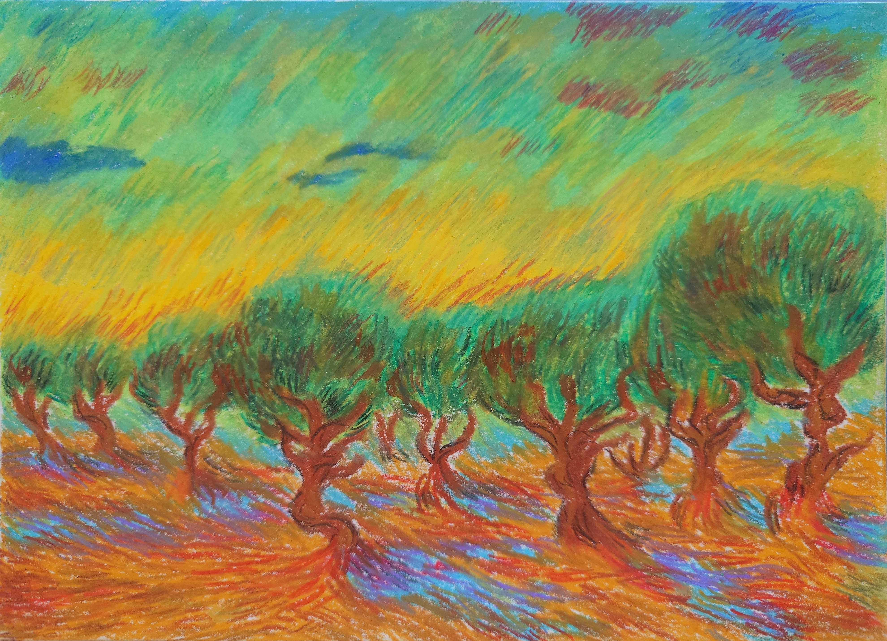
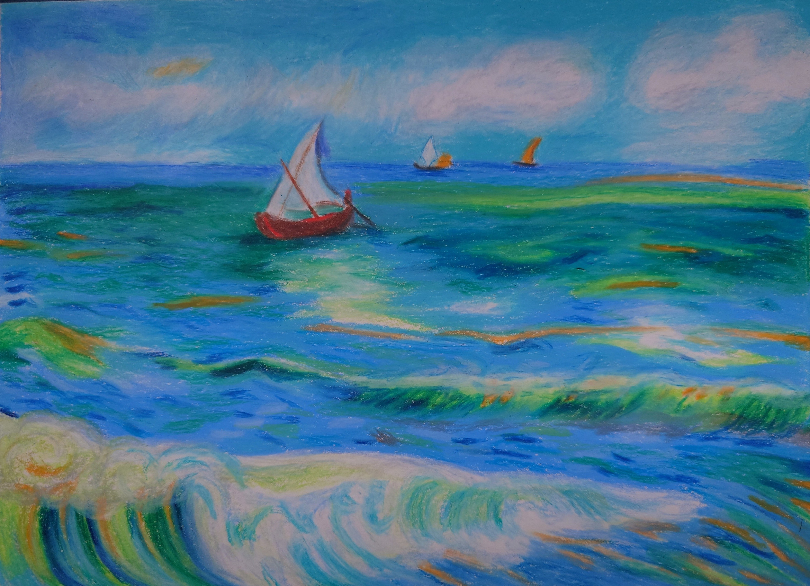
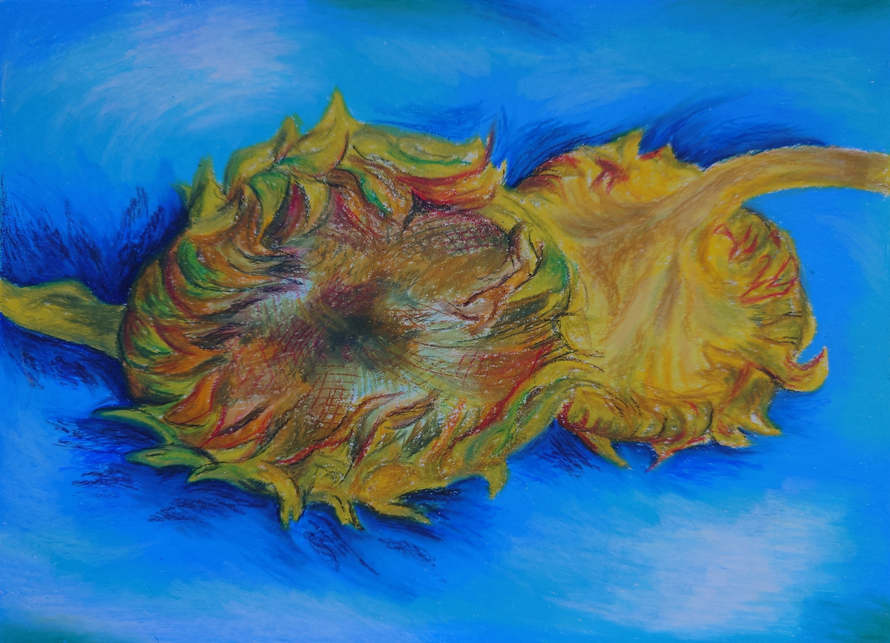
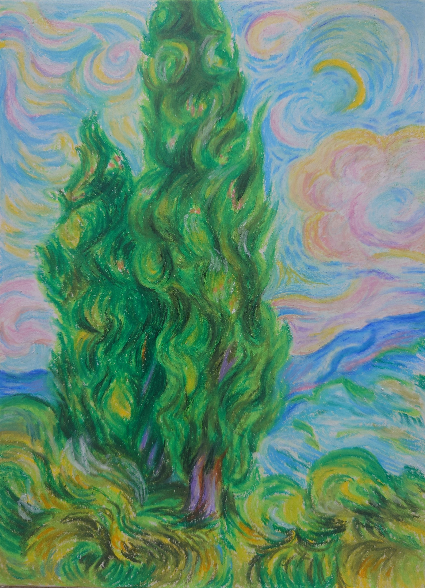

Postcards

Winter
Decoration
Made with acrylic paint on cold pressed, fine grain paper.
10,5 × 14,8 cm
November 2024

Winter Skaters
Made with acrylic paint on cold pressed, fine grain paper.
10,5 × 14,8 cm
December 2024

Winter Hue
Made with acrylic paint on cold pressed, fine grain paper.
10,5 × 14,8 cm
November 2024

Winter
Made with acrylic paint on cold pressed, fine grain paper.
10,5 × 14,8 cm
November 2024

Winter Lake
Made with acrylic paint on cold pressed, fine grain paper.
10,5 × 14,8 cm
November 2024

Winter Bird
Made with acrylic paint on cold pressed, fine grain paper.
10,5 × 14,8 cm
December 2024

Winter Birds
Made with acrylic paint on cold pressed, fine grain paper.
10,5 × 14,8 cm
November 2024

Light House
Made with acrylic paint on cold pressed, fine grain paper.
10,5 × 14,8 cm
November 2024

Lost Prince
Made with Caran D'Ache Neocolor II Aquarelle and Caran D'Ache Pablo pencils on mixed media paper size A5.
June 2026
Small Drawings

Garden
Based on Studio Ghibli's Only Yesterday.
Made with Caran d'Ache Pablo pencils and acrylic paint on cold-pressed, fine-grain paper.
17 × 24 cm
Escaperoom Series No. 3, May 2026.

Bedroom
Based on Studio Ghibli's Kiki's Delivery Service.
Made with Caran d'Ache Pablo pencils and acrylic paint on cold-pressed, fine-grain paper.
17 × 24 cm
Escaperoom Series No. 4, May 2026.

Bakery
Made with Caran d'Ache Pablo pencils and acrylic paint on cold-pressed, fine-grain paper.
17 × 24 cm
Escaperoom Series No. 5, June 2026.
Drawings

Steps
Based on Studio Ghibli's Spirited Away.
Made with Caran d'Ache Pablo pencils on mixed media paper size A4.
August 2025

Howl's Bedroom
Based on Studio Ghibli's Howl's Moving Castle.
Made with Caran d'Ache Pablo pencils on mixed media paper size A4.
June 2025

Journey
Based on Frieren: Beyond Journey's End.
Made with Caran d'Ache Pablo pencils and acrylic paint on cold-pressed, fine-grain paper.
21 × 29,7 cm
Escaperoom Series No. 1, April 2026.

Town Square
Made with Caran d'Ache Pablo pencils and acrylic paint on cold-pressed, fine-grain paper.
21 × 29,7 cm
Escaperoom Series No. 2, April 2026.
Small Paintings

Waterfall
Made with acrylic paint on cotton stretched canvas, medium grain.
30 × 24 cm
July 2020
Paintings

Forest Deer
Made with acrylic paint on linen stretched canvas, medium grain.
50 × 40 cm
December 2024

Lake with Skaters
Made with acrylic paint on cotton stretched canvas, medium grain.
40 × 60 cm
December 2024
Studies



